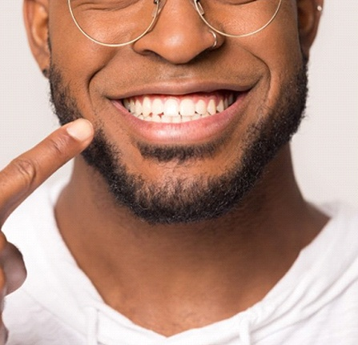
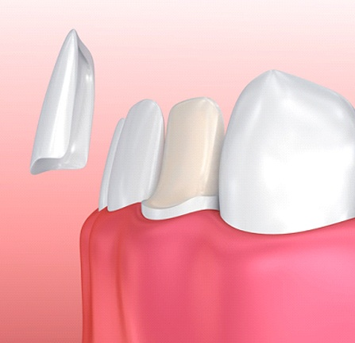
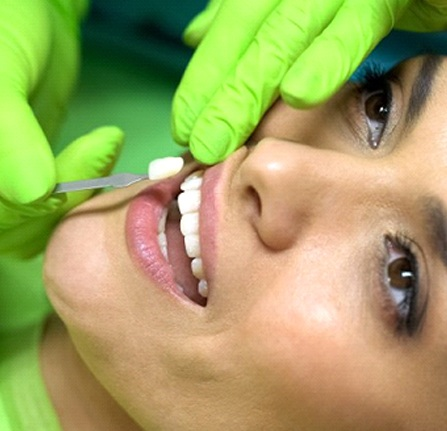
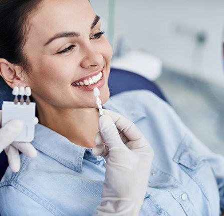
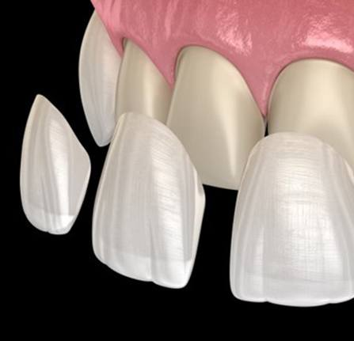

Welcoming New and Existing Patients
Thanks to smartphones and social media, your smile is on display more than ever before. If your teeth are plagued by flaws like stains, chips, or gaps, you may find it hard to smile in photos. Maybe you’re interested in improving your pearly whites with cosmetic dentistry, but the sheer number of available services can feel overwhelming at first. But with porcelain veneers in our Grafton, WI dental office, our dentistry team can give several of your teeth a makeover at once! If you’ve been dreaming of having a perfect smile, we invite you to call Sweet Smiles Family Dentistry and schedule a consultation for veneers.

A veneer is a thin shell that is bonded to a tooth to cover up its entire front-facing surface. Veneers used to be made of composite resin, but nowadays, most dentists use veneers made of porcelain instead because it’s more durable and resistant to staining.
Because veneers conceal the whole front portion of a tooth, they can be used to correct all kinds of imperfections, including:
When it comes to fixing multiple smile flaws at once, veneers are usually the perfect treatment. They’ll give you the confidence to smile brightly in every single photo!

The process of getting veneers starts with a consultation with one of our dentists. By having them examine your mouth and talking with them about your smile goals, together you can decide whether veneers are the right treatment for you. If you decide to move forward with the veneers process, you can go ahead and schedule the first of the two appointments it will take to get them.

During your consultation, don’t be surprised if you hear our dentists go on and on about the various advantages that veneers have. Some of these benefits include:

From the procedure to the benefits, there are a number of things to consider when it comes to determining if veneers are the right smile-perfecting treatment for you. One factor many patients are curious about is the price. If you’ve been wondering about the cost of veneers in Grafton, keep reading!
Veneers are one of the most popular cosmetic dental treatments, but they are by no means the only one. If you are on the fence about which service is best for you, here are a few things to consider about the price:
Since veneers in Grafton aren’t typically covered by dental insurance providers, many patients automatically assume that they are too expensive. However, that may not be the case! To start, we have an in-office discount plan, which provides sizeable discounts on non-preventive care. Flexible financing is another option to consider, which will break up the cost into manageable monthly chunks. So that you can make an informed decision, we will discuss each of these options in-depth during your initial consultation. Whichever one you choose, our team will be here to answer any questions you have along the way!

Veneers sound like an amazing way to improve your smile – and they are. However, it’s perfectly understandable to have a few questions that need answered before you commit to the treatment. Below, we’ve included the answers to some of the most common questions we get regarding veneers. Feel free to give us a call if you don’t find the information you’re looking for!
The goal of veneers is to make all of your visible teeth look even and attractive. That’s why, in most cases, we recommend receiving veneers on “the social six.” These are the six teeth on the upper arch that show most prominently when you smile. Many patients end up getting eight, ten, or even twelve veneers to ensure their smile looks symmetrical. However, it’s also possible to only get one veneer to cover up a single problem tooth. We’ll discuss your options during your consultation.
In order for the veneers to fit comfortably on your teeth, a very thin layer of enamel must be removed from the outside of the affected teeth. Because tooth enamel does not grow back once it is lost, the tooth will always need some sort of protection moving forward – whether you choose to replace your veneer when the time comes or switch to a dental crown.
The material that bonds the veneer to the tooth is 100% safe, and the procedure does not increase the risk of cavities. That said, you should still brush and floss every day (and come in for a checkup and cleaning at least twice a year) to prevent decay from occurring on the tooth underneath the veneer.
While you’re wearing the temporary veneers before the permanent ones are placed, you’ll want to avoid certain foods. Crunchy items like ice, hard candy, and raw fruits and vegetables could damage the restorations, and sticky foods could actually pull them off your teeth. Temporary veneers also stain more easily, so limit darkly pigmented foods and drinks.
For the most part, you can enjoy all of your favorite foods again once your permanent veneers have been placed. However, you should still be wary of extremely hard foods that could cause breakage. Also, consume alcohol sparingly, as there’s a chance it could weaken the bonding material over time.
Some people have difficulty pronouncing certain words when their veneers are first placed. The small difference in thickness between your veneers and natural teeth may confuse the tongue, resulting in a slight lisp. This should only last a few days at most. Practicing saying certain words repeatedly (particularly those with a lot of “s” sounds) may help to help your tongue adjust more quickly.
9:00am – 6:00pm
9:00am – 6:00pm
9:00am – 6:00pm
9:00am – 6:00pm
8:00am – 2:00pm